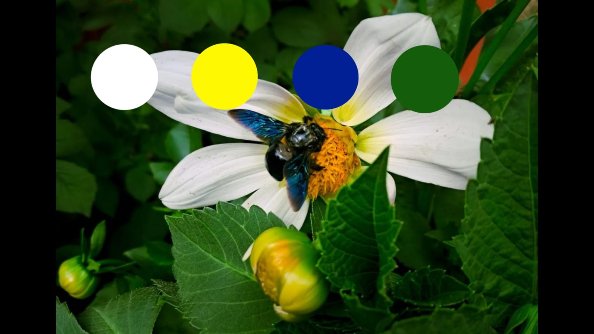
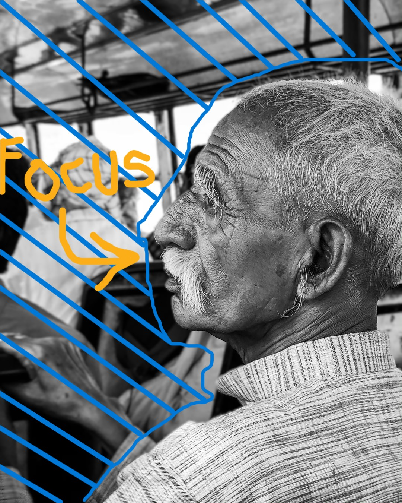

The art of composition refers to the deliberate arrangement of visual
elements within a frame to create a compelling image. A well-composed
photograph can guide the viewer's eye, convey emotion, and tell a
story.
Effective composition elevates photos by directing focus and evoking
emotion through various techniques.
Key techniques include the rule of thirds, where the frame is divided
into nine equal parts and important elements are placed along these
lines or intersections. Leading lines can draw attention to the subject,
while framing techniques, like shooting through a window or arch, add
depth. Balancing elements ensures that no part of the image overwhelms
another, creating harmony. By mastering composition, photographers can
elevate ordinary scenes into captivating works of art.
Some easy and great composition techniques for beginners are-
Rule of Thirds
Leading Lines
Symmetry and Balance
Framing
Golden Ratio
Triangles and Diagonals

The Art of Color Grading
The art of color grading in photography involves adjusting and enhancing the colors of an image to achieve a desired mood or aesthetic. By manipulating tones, contrasts, and hues, photographers can evoke specific emotions, create atmosphere, or establish a cohesive visual style.
Color grading shapes the mood of a photograph by fine-tuning tones and contrasts, creating a visual narrative that enhances the viewer’s experience.
Color grading can be subtle, with slight adjustments to natural colors, or bold, transforming the entire palette to convey a particular theme. It’s commonly used in post-processing to refine an image’s look, adding depth and drama, while guiding the viewer's emotional response to the photograph.
Some of the most used color grading techniques are listed below -
Enhancing Depth - Adjust the shadows and highlights to add dimension to an image.
Style Consistency - Create a unified look across multiple photos for a cohesive aesthetic.
Color Harmony - Balance the hues to make the image visually pleasing and engaging.
Highlighting Details - Use color contrast to draw attention to important elements in the frame.

The Art of Portraits
The art of portrait photography captures the essence, personality, and emotions of a subject, often telling a story through a single image. Effective portraits go beyond just showing what a person looks like; they reveal something deeper about their character.
Portrait photography is a really powerfull field to create images that resonate deeply with viewers and it is also considered to be one of the hardest.
Key elements include lighting, composition, and background, all chosen to highlight the subject’s unique features and mood. Expression and pose are also essential, as they communicate emotions and connect the viewer to the subject. By combining technical skill with a keen sense of connection, portrait photographers create images that feel both personal and powerful.
Some importaint points to keep in mind -
Capturing Emotion - Focuses on authentic expressions to convey the subject's inner feelings.
Lighting Techniques - Uses light to shape features and set the mood of the portrait.
Background Selection - Chooses a backdrop that enhances or complements the subject.